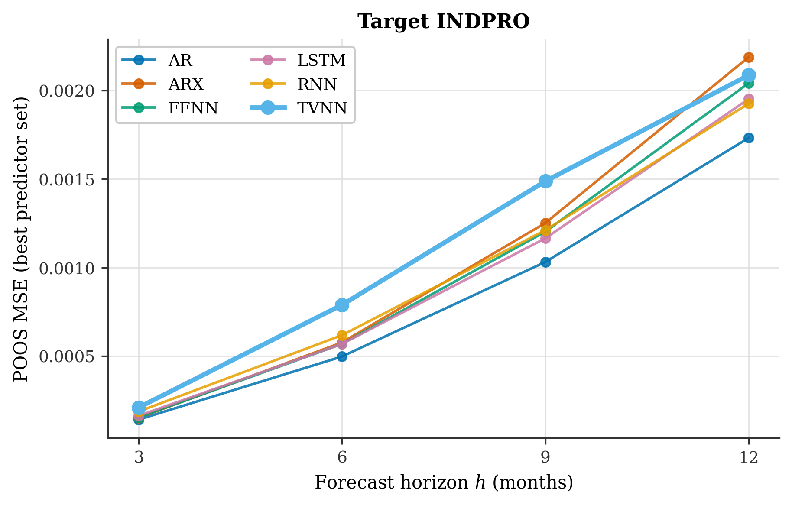
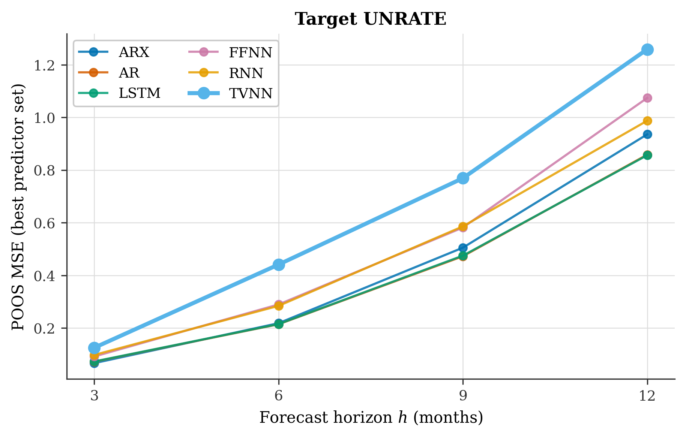
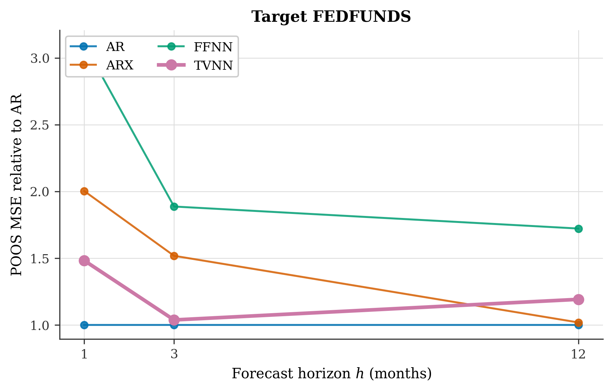
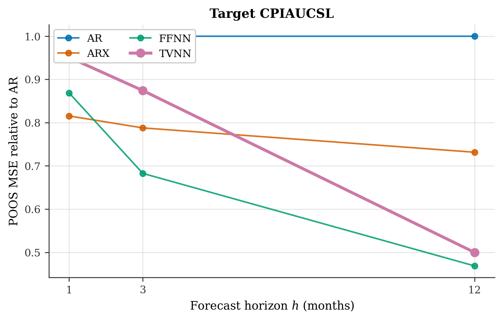
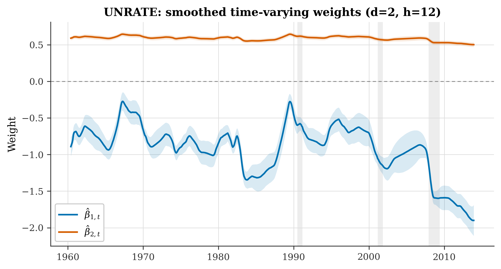
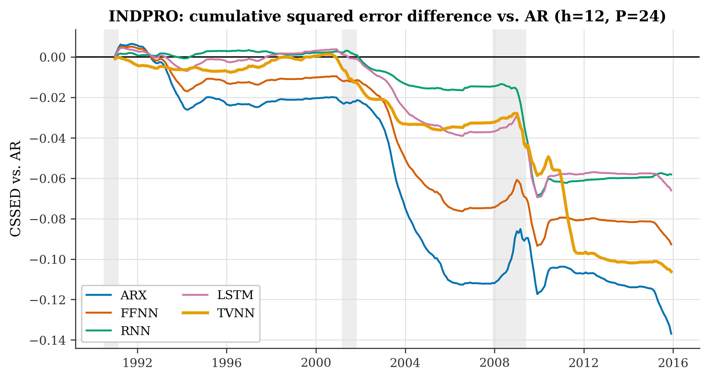
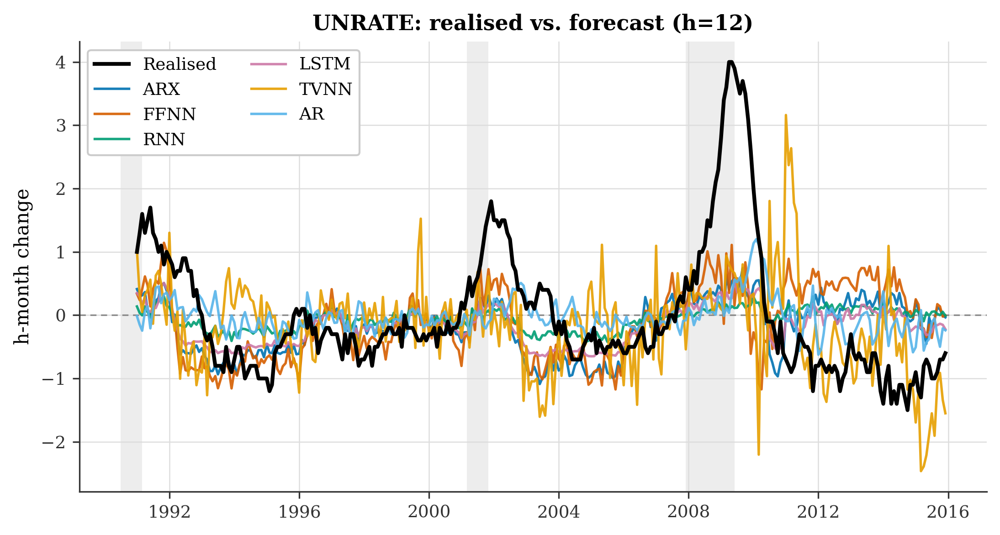
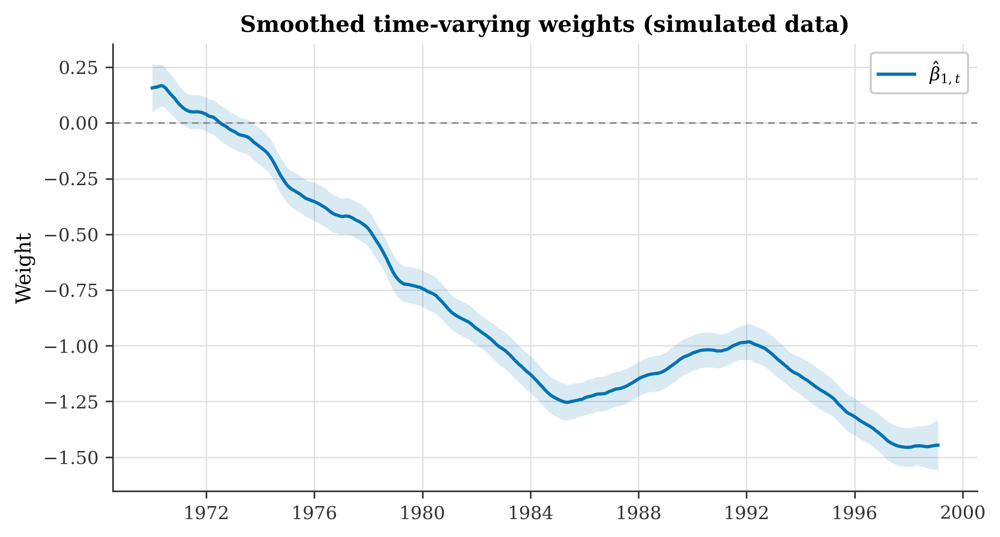
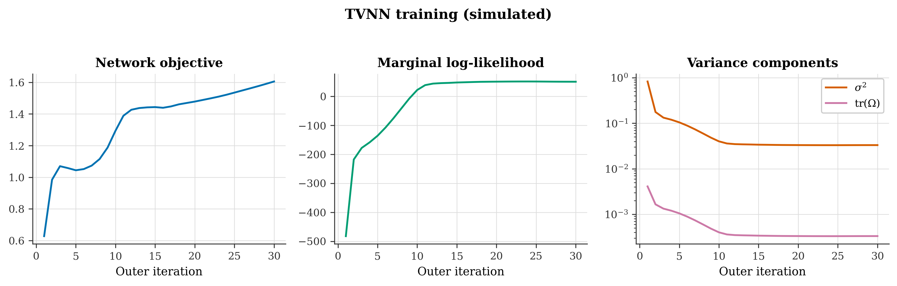

Neural networks whose weights are allowed to move
A faithful, tested Python implementation of the TVNN — a feedforward network that learns a low-dimensional basis, with the weights on that basis following a random walk, estimated by a Kalman filter inside an EM algorithm.


01What is the TVNN
Start from a univariate target and a predictor panel. Stack kx predictor lags and ky target lags into u_t. A linear time-varying-parameter model would regress y_{t+h} on u_t with random-walk coefficients. The TVNN inserts a network first:
yt+h = zt′ βt + εt εt ~ N(0, σ²)
βt = βt−1 + ξt ξt ~ N(0, Ω)
Why this is cheap. The state dimension is d, a design choice — not P. Appendix A.3 of the paper selects d ∈ {1, 2}, so the Kalman recursions stay trivial even when P = 424. That is the whole reason the method scales where ordinary high-dimensional TVP models do not.
How it is estimated
Two loops over different objectives, and the split is deliberate:
| Loop | Optimises | Uses | Why |
|---|---|---|---|
| inner, EM | θ = {σ², Ω, b0} | smoothed states | closed-form M step (Holmes 2013) |
| outer, Adam | network weights w | filtered states | only filtered states exist out of sample |
Training the basis against smoothed states would generalise badly, because at forecast time there is no future data to smooth with. Inside the Adam block the states are frozen constants — which is why a gradient step costs exactly what an ordinary network's does.
statsmodels02Install & quickstart
pip install tvwnnRequires Python ≥ 3.10 with NumPy, pandas, SciPy, PyTorch, scikit-learn and Matplotlib. CPU-only PyTorch is plenty — at d ∈ {1,2} there is nothing for a GPU to do.
Sixty seconds, no download required
import numpy as np
from tvwnn import TVNN, simulate_tvnn, dm_test, FeedForwardForecaster
ds, truth = simulate_tvnn(n=420, p=3, h=1, sigma=0.3, omega=0.02, seed=0)
n_train = 350
model = TVNN(d=1, hidden_sizes=(32,), n_outer=30, grad_steps=10,
l2=0.02, random_state=0).fit(ds.U[:n_train], ds.y[:n_train])
print(model.summary())Out-of-sample accuracy
----------------------------------------------------
model MSE vs AR DM p
AR 2.9388 1.000
FFNN 2.7071 0.921 0.2899
TVNN 0.2250 0.077 0.0000 ***
----------------------------------------------------
TVNN vs FFNN: DM = -8.365, p = 0.0000 ***Real economic data in ten lines
from tvwnn import fetch_fred_md, build_fred_dataset, TVNN
panel, tcodes = fetch_fred_md(cache_dir="data") # downloads & caches FRED-MD
ds = build_fred_dataset(target="UNRATE", h=12, n_factors=5, # P = 24
start="1960-01-01", end="2014-12-01",
data=panel, tcodes=tcodes)
model = TVNN(d=2, l2=0.02, random_state=0).fit(ds.U, ds.y)n_factors | Design | P | Paper |
|---|---|---|---|
| 5 | 4 target lags + 4 lags × 5 principal components | 24 | P = 24 |
| 15 | 4 target lags + 4 lags × 15 principal components | 64 | P = 64 |
| None | 4 target lags + 4 lags × every series, no PCA | ~460 | P = 424 |
| 0 | 4 target lags only | 4 | the AR benchmark |
fetch_fred_qd() — 233 complete FRED-QD series including real GDP, with h read as quarters.03Writing the code, step by step
This is the build guide: what each module does, why it exists, the equation it implements, and the trap it avoids. Read it in order and you can rewrite the library from scratch.
Algorithm 1 has two loops over different objectives, and only one needs derivatives. The EM loop runs with the network frozen — pure recursion over tiny matrices, no autodiff. The Adam loop runs with the states frozen — gradients flow only through z_t.
So: NumPy for the state space, PyTorch for the network. That mirrors the algorithm exactly and avoids fighting an autodiff framework over a sequential scan.
innovation vt = yt − zt′at|t-1 Ft = zt′Pt|t-1zt + σ²
gain Kt = Pt|t-1 zt / Ft
update at|t = at|t-1 + Kt vt
Two details that are easy to get wrong. Return both the predicted and the updated state — they are not interchangeable, and which one enters eq. (8) decides whether the objective is a genuine prediction-error decomposition. And symmetrise P after every update, or floating-point drift over 700 iterations quietly corrupts the smoother gains.
Eq. (7) needs Var[ξ_t | y] = Pt|n + Pt−1|n − Pt,t−1|n − Pt,t−1|n′. The lag-one smoothed covariance is not returned by a plain RTS smoother — it needs its own recursion. Omit it and you inflate Ω̂ with no error raised at all: nothing crashes, the model just concludes the coefficients drift far more than they do.
The tripwire is test_loglikelihood_increases_monotonically — dropping the cross term breaks EM's monotonicity guarantee, so the test catches it.
Fast path. Since d ∈ {1,2}, the d = 1 case runs in pure Python floats. NumPy's per-call overhead on 1×1 arrays dominated everything: this took a filter+smoother pass from 11.3 ms to 0.86 ms, and a test asserts it matches the matrix path to 1e−10.
Differentiate Q and set to zero. The paper prints none of these — it delegates to Holmes (2013) by citation — so they come from that technical report:
Ω̂ = (1/T) Σt [ Σ̂ξt + ξ̂t ξ̂t′ ]
b̂0 = β̂0
Validate here, before writing any network code. With a fixed design the M step is an exact maximiser, so EM must recover known-truth parameters. It does: σ² = 0.25 recovered as 0.2606, Ω = diag(0.010, 0.004) as diag(0.0105, 0.0025) on n = 800.
Before trusting anything, check the filter against an independent implementation. statsmodels' MLEModel implements the same state space in Durbin–Koopman conventions:
our loglik -219.6990712607
statsmodels -219.6990712601
max |v diff| 5.8e-10
max |F diff| 1.6e-08
max |filt diff| 1.7e-10This is the strongest available correctness argument for the half of the model that contains no novel mathematics. Whatever goes wrong later is in the alternation, not the filter.
Appendix A.3 selects d ∈ {1, 2}. Combined with “first hidden layer of size 32”, that means z_t is a bottleneck output layer of width one or two, not the 32-unit hidden layer. Get this wrong and you build a 32-dimensional state — a completely different, far more expensive model.
Dropout applies only in training mode; the basis handed to the Kalman recursions is always computed in eval mode, because a stochastic z_t would make the filter meaningless.
for _ in range(n_outer):
Z, z_tilde = net.basis_numpy(U_t) # network frozen
theta, _ = run_em(target, Z, theta, ...) # inner EM to convergence
filt = kalman_filter(target, Z, ...)
b, V = filt.a_pred, filt.P_pred # states frozen
for _ in range(grad_steps): # Adam, states constant
z, zt = net(U_t) # z recomputed: w changes
resid = y_t - einsum("td,td->t", z, b_t)
F = sigma2 + einsum("td,tde,te->t", z, V_t, z)
loss = mean(resid**2 / F) + l2 * net.l2_penalty()
loss.backward(); optimiser.step()b and V are frozen inside the inner loop — that is the paper's whole computational claim, and it is only true under freezing. z is recomputed each Adam step and appears in both the mean and the variance. And momentum is applied to the filtered states, not to the weights.
A supervised pair is (u_t, y_{t+h}). At forecast origin o only observations dated ≤ o exist, so the last usable training pair is (u_{o−h}, y_o). The state at index o is therefore h random-walk steps beyond the last one the filter saw:
which is exactly what forecast(..., gap=h) does. Skip it and you either leak future information or understate the forecast variance by h·Ω. A test asserts the inflation is exactly h·Ω.
Expanding window from 1960, re-estimate every 30 months, POOS 1990–2014. Two things the engine does that the paper does not describe:
- PCA inside the training window. Estimate the diffusion indices on training data only and project the evaluation period through those loadings. Fitting the PCA once on the full sample leaks the future into every forecast.
- Re-filter at every origin. The network is re-estimated every 30 months, but the Kalman filter absorbs each new observation at almost no cost — holding the state fixed between re-estimations wastes the point of the state-space layer.
Tables render twice — fixed-width console with rules, and booktabs LaTeX — with block minima marked and a significance footer, following the layout of Tables 1 and 2.
Figures are light only: white background, Okabe–Ito colour-blind-safe palette, serif stack, no top/right spines, 300 dpi PNG plus vector PDF. There is no dark variant by design — dark figures do not print.
Everything above passes on simulated data. Then FRED-MD breaks it twice:
|z|drifts to 42 because the basis layer is linear and nothing pins its scale;- the EM concludes
tr(Ω)/σ² ≈ 11— “all drift, no noise” — because at h = 12 the target is an overlapping difference whose MA(11) errors the state is delighted to absorb.
Together they produced forecasts spanning [−18.4, 9.8] against a realised [−1.5, 4.0]. The fixes are normalize_basis and sn_cap.
A component-verified implementation can still be useless on the data it was written for. Simulate to check the mathematics, then run the real thing and look at the range of the forecasts before you look at their mean squared error.
- Every pairwise Diebold–Mariano test. The paper's headline is that the TVNN beats a similarly tuned FFNN, but every star in its tables is against the AR benchmark.
- Model Confidence Set. Two targets × four horizons × three predictor sets × six models of pairwise tests, with no multiplicity control.
- Predictive variance. The Kalman machinery hands you
F_t = σ² + z_t′V_t z_tfor free; the paper reports point forecasts only.
04API & syntax
The estimator
TVNN(d=1, hidden_sizes=(32,), activation="tanh", dropout=0.0, fixed_effect=False,
n_outer=30, grad_steps=10, em_iter=50, em_tol=1e-6,
learning_rate=0.01, l2=0.32, momentum=0.0,
loss="weighted_sse", state="predicted", omega_structure="full",
sn_cap=0.01, v0_scale=1e6, standardize=True, normalize_basis=True,
random_state=None, device=None, verbose=False)| Argument | Default | Meaning |
|---|---|---|
| d | 1 | Basis functions = state dimension. A.3 selects from {1, 2}. |
| hidden_sizes | (32,) | (32,) or (32, 16) in the paper. |
| activation | "tanh" | A.3 uses tanh throughout. |
| fixed_effect | False | Add the z̃_t output node of eq. (4). |
| n_outer | 30 | N, outer iterations. |
| grad_steps | 10 | M, Adam steps per outer iteration. 30 × 10 = 300 epochs, A.3's budget. |
| learning_rate | 0.01 | A.3 draws from 0.01 × 2^s, s ∈ {0,1,2}. |
| l2 | 0.32 | α. A.3 draws from 0.01 × 2^s, s ∈ {1..6}. |
| momentum | 0.0 | γ on the filtered states, not on weights. |
| loss | "weighted_sse" | Eq. (8) as printed, or "exact" with the log F_t term. See §6. |
| state | "predicted" | Which Kalman moments enter eq. (8). See §6. |
| sn_cap | 0.01 | Bound on tr(Ω)/(dσ²). Not in the paper — see §7. |
| normalize_basis | True | Unit-variance columns of z_t. Not in the paper — see §7. |
Methods
.fit(U, y) # U[t] = u_t, y[t] = y_{t+h} -- use build_supervised
.predict() # in-sample one-step-ahead fitted values
.forecast(u_new, gap=0, return_variance=False, U_hist=None, y_hist=None)
.summary() # sigma2, Omega, omega_trace, b0, final_loglik, settingsSet gap=h in every forecast call. It carries the state forward from the last training observation to the forecast origin. poos_experiment does it for you.
Everything else
# Ensembles -- A.3 averages 10 networks; Tables 1 and 2 are ensemble forecasts
TVNNEnsemble(n_members=10, random_state=None, **tvnn_kwargs)
# Baselines, all with the same .fit / .forecast interface
ARBenchmark() · RidgeARX() · FeedForwardForecaster() · RecurrentForecaster(cell="rnn"|"lstm")
# Data
fetch_fred_md() · fetch_fred_qd() · transform_panel() · diffusion_indices()
PCAProjector() · make_target() · target_kind_from_tcode() · build_supervised()
build_fred_dataset() · simulate_tvnn()
# Evaluation
poos_experiment() · dm_test() · model_confidence_set() · mse_table()
A3_GRID · sample_hyperparameters() · select_hyperparameters()
# Reporting
forecast_accuracy_table() · render_console() · render_latex() · dm_matrix()
plot_mse_by_horizon() · plot_time_varying_weights() · plot_cssed()
plot_forecast_vs_actual() · plot_convergence() · plot_scree() · save_figure()05Code → equation map
| Paper | Code |
|---|---|
eq. (1) u_t | data.build_lag_matrix, data.build_supervised |
| eq. (2)–(3) linear TVP | kalman.kalman_filter with Z = U |
| eq. (4) TVNN measurement | model.TVNN.fit, network.BasisNetwork |
| eq. (5) marginal likelihood | kalman.FilterResult.loglik |
| eq. (6) / App. A.1 eq. (9) | em.expected_loglik |
| eq. (7) E-step quantities | kalman.kalman_smoother |
| M step (Holmes 2013) | em.m_step |
| eq. (8) / App. A.2 | the Adam block of model.TVNN.fit |
| Algorithm 1 | model.TVNN.fit, em.run_em |
| §4 targets | data.make_target |
| §4 diffusion indices | data.diffusion_indices, data.PCAProjector |
| §4 POOS protocol | evaluate.poos_experiment |
| §4 Diebold–Mariano | evaluate.dm_test |
| App. A.3 grids | evaluate.A3_GRID, select_hyperparameters |
| App. A.3 ensembles of 10 | model.TVNNEnsemble |
| Tables 1–2 / Figures 1–2 | tables.forecast_accuracy_table, plots.plot_mse_by_horizon |
T multiplier in eq. (3), a spurious sign and wrong summation limits in eq. (8), arg min for arg max in Algorithm 1, and more. They are listed in full in the repository README.06Results on the paper’s two targets
US industrial production and the unemployment rate, FRED-MD, pseudo-out-of-sample 1990–2014, models re-estimated every 30 months. Every number below is generated by run_empirical_study.py and read straight from the CSVs it writes.
| Model | h = 3 | h = 6 | h = 9 | h = 12 |
|---|---|---|---|---|
| AR | 1.000 | 1.000 | 1.000 | 1.000 |
| ARX | 1.069 | 1.160 | 1.213* | 1.264** |
| FFNN | 1.087 | 1.143 | 1.166* | 1.178* |
| RNN | 1.320 | 1.242 | 1.174 | 1.112 |
| LSTM | 1.153 | 1.143 | 1.130 | 1.127* |
| TVNN | 1.481* | 1.586* | 1.442* | 1.204** |
| Model | h = 3 | h = 6 | h = 9 | h = 12 |
|---|---|---|---|---|
| AR | 1.000 | 1.000 | 1.000 | 1.000 |
| ARX | 0.923 | 1.019 | 1.069 | 1.090 |
| FFNN | 1.269 | 1.350 | 1.231 | 1.251 |
| RNN | 1.352* | 1.326* | 1.240 | 1.150 |
| LSTM | 1.010 | 1.003 | 1.005 | 0.998 |
| TVNN | 1.727*** | 2.056*** | 1.627 | 1.466* |
| Model | vs ARX | vs FFNN | vs RNN | vs LSTM | vs TVNN | vs AR |
|---|---|---|---|---|---|---|
| ARX | — | 0.129 | 0.345 | 0.193 | 0.713 | 0.046 |
| FFNN | 0.129 | — | 0.538 | 0.327 | 0.839 | 0.052 |
| RNN | 0.345 | 0.538 | — | 0.798 | 0.393 | 0.246 |
| LSTM | 0.193 | 0.327 | 0.798 | — | 0.453 | 0.082 |
| TVNN | 0.713 | 0.839 | 0.393 | 0.453 | — | 0.034 |
| AR | 0.046 | 0.052 | 0.246 | 0.082 | 0.034 | — |
| Model | Avg. loss | Eliminated at | MCS p-value | In MCS |
|---|---|---|---|---|
| AR | 0.0017 | — | 0.100 | yes |
| RNN | 0.0019 | — | 0.100 | yes |
| LSTM | 0.0020 | — | 0.100 | yes |
| FFNN | 0.0020 | 3 | 0.068 | no |
| TVNN | 0.0021 | 2 | 0.068 | no |
| ARX | 0.0022 | 1 | 0.068 | no |
| Model | Avg. loss | Eliminated at | MCS p-value | In MCS |
|---|---|---|---|---|
| LSTM | 0.8563 | — | 0.172 | yes |
| AR | 0.8583 | — | 0.172 | yes |
| ARX | 0.9355 | — | 0.172 | yes |
| RNN | 0.9873 | — | 0.172 | yes |
| FFNN | 1.0737 | — | 0.172 | yes |
| TVNN | 1.2584 | — | 0.172 | yes |
07Six targets, three horizons
The paper studies two series at four horizons, all with h > 1. That is a narrow slice, and looking past it changes the conclusion.
| Target | Model | h = 1 | h = 3 | h = 12 |
|---|---|---|---|---|
| CPIAUCSL | AR | 1.000 | 1.000 | 1.000 |
| ARX | 0.815*** | 0.788*** | 0.732 | |
| FFNN | 0.869** | 0.683*** | 0.469*** | |
| TVNN | 0.951 | 0.874 | 0.500*** | |
| FEDFUNDS | AR | 1.000 | 1.000 | 1.000 |
| ARX | 2.003*** | 1.518 | 1.018 | |
| FFNN | 3.105*** | 1.887 | 1.722 | |
| TVNN | 1.483*** | 1.037 | 1.191 | |
| INDPRO | AR | 1.000 | 1.000 | 1.000 |
| ARX | 1.002 | 1.069 | 1.264** | |
| FFNN | 1.105 | 1.355* | 1.340** | |
| TVNN | 1.207** | 1.490 | 1.395** | |
| PAYEMS | AR | 1.000 | 1.000 | 1.000 |
| ARX | 1.320*** | 1.278 | 1.385 | |
| FFNN | 1.585*** | 1.516*** | 1.465 | |
| TVNN | 2.495*** | 2.031*** | 2.434** | |
| S&P 500 | AR | 1.000 | 1.000 | 1.000 |
| ARX | 1.080* | 1.121 | 1.185 | |
| FFNN | 1.211** | 1.391** | 1.238 | |
| TVNN | 1.137** | 1.096 | 1.528** | |
| UNRATE | AR | 1.000 | 1.000 | 1.000 |
| ARX | 0.939 | 0.923 | 1.090 | |
| FFNN | 1.105 | 1.269 | 1.251 | |
| TVNN | 0.998 | 1.173 | 1.727 |
1. On inflation the method works, and works well. On CPIAUCSL at h = 12 the TVNN cuts the AR benchmark's error in half, p < 0.01, and every nonlinear model beats the benchmark at every horizon. Consistent with Medeiros et al. (2021). The paper never tries it.
2. The paper’s own claim reproduces — on a series with a real regime break. On FEDFUNDS at h = 1 the TVNN more than halves the fixed-weight FFNN's error, 1.483 against 3.105, DM p = 0.017. That is exactly the “time-varying beats fixed” result the paper asserts and never tests, and it appears where theory says it should: the funds rate over 1990–2014 contains the zero lower bound from December 2008.
3. The overlapping target really is part of the problem. On INDPRO the TVNN goes from 1.207 at h = 1 to 1.490 at h = 3. At h = 1 there is no overlap and no induced MA structure for the random-walk state to absorb.
The honest summary: the TVNN is not a general-purpose improvement over a fixed-weight network — it is a tool for series whose conditional relationship actually shifts. That is a more useful statement than the paper's, and it is only visible once you look past two targets.
08Figure gallery
Every figure is produced by the library at 300 dpi in PNG and vector PDF, on a white background with the Okabe–Ito colour-blind-safe palette. There is no dark variant, by design — dark figures do not print.



DM p = 0.017. This is the paper's central claim, on a series containing the zero lower bound.





09What the paper leaves open
Rather than guess, the library implements both branches of each and documents the default.
The missing log F_t in eq. (8) — loss=
Eq. (8) as printed is a variance-weighted sum of squares. But the Gaussian log-density is −½[log(2πF_t) + v_t²/F_t], and eq. (8) has neither the log F_t nor the ½. Appendix A.2 sets the decomposition up correctly, then writes “By normality, (8) follows” — asserting rather than deriving. Since F_t depends on w through z_t, the omission changes the gradient.
Which filtered state enters eq. (8) — state=
Algorithm 1 says b_t = E[β_t | y_t], the updated filtered state. But observation t in this state space is y_{t+h}, so that state has already absorbed the very value it is being used to predict. The textbook prediction error decomposition uses the one-step-predicted state, which is the default here and the only reading under which eq. (8) is a prediction-error decomposition at all.
Identification — read shapes, not levels
For any invertible A, the map z → A′z, β → A⁻¹β, Ω → A⁻¹ΩA⁻ᵀ leaves the entire predictive distribution unchanged. So β̂_t carries no “the coefficient on feature j drifted” reading — read the shape, not the level — and Ω̂ is not comparable across runs or seeds. Point forecasting is unaffected, which is why the paper's results stand. The paper concedes the symptom without naming the cause.
10What only shows up on real data
Neither of these is visible on simulated data, and neither is mentioned in the paper. Both were found by running the estimator on FRED-MD and watching it fail.
The signal-to-noise ratio runs away — sn_cap
At horizon h the target is an overlapping difference, so its errors are MA(h−1) by construction — and a drifting coefficient is an excellent way to absorb that. On FRED-MD unemployment at h = 12 the unconstrained EM returns tr(Ω)/σ² ≈ 11: the coefficient fully re-randomises within a year.
sn_cap | d | POOS MSE | Forecast range |
|---|---|---|---|
| None (paper) | 1 | 3.13 | [−9.60, 3.92] |
| None (paper) | 2 | 10.11 | [−18.41, 9.77] |
| 0.01 (default) | 1 | 2.09 | [−1.45, 2.83] |
| 0.01 (default) | 2 | 2.03 | [−2.41, 3.84] |
The learned basis is unbounded — normalize_basis
The basis layer is linear, so ‖z‖ is unconstrained — and because the model is invariant to a rotation of the basis, nothing pins the scale down. On FRED-MD the network drifts to |z| up to 42 while β shrinks to compensate. Mathematically identical; numerically awful. Normalising is a reparameterisation, not a restriction: it picks a well-conditioned point on the same orbit, and |z|max drops from 42.2 to 2.5.
What this means for the paper
On the paper’s own two targets, this implementation does not reproduce its published forecast accuracy. Two explanations were tested and ruled out: raising the training budget makes things worse (the networks overfit, they are not undertrained), and sweeping A.3's entire penalty grid rescues the FFNN to parity with the benchmark but does nothing for the TVNN.
Three parts of the paper's protocol are implemented but off by default, because each multiplies runtime: 10-network ensembles (--ensemble 10, measured effect 1.70× → 1.41×), per-period random search over the A.3 grid (--tune), and a pinned FRED-MD vintage (--vintage). They narrow the gap without closing it.
What this library does claim, and tests, is narrower and firmer: each component is correct in isolation, the h-step alignment carries no look-ahead, and on data generated by the paper's own model the estimator recovers it.
11Testing & verification
pytest tests/ -v| Test | Establishes |
|---|---|
| test_filter_matches_statsmodels | log-likelihood, innovations and filtered states match an independent implementation to ~1e−9 |
| test_scalar_fast_path_matches_general_path | the d = 1 optimisation is exact to 1e−10 |
| test_em_recovers_the_truth | EM recovers known σ² and Ω on a fixed design |
| test_loglikelihood_increases_monotonically | EM's defining guarantee — and the tripwire for a dropped lag-one covariance |
| test_lag_one_covariance_is_not_negligible | the cross term is material, not rounding |
| test_supervised_pair_uses_only_past_predictors | no look-ahead in the design matrix |
| test_forecast_gap_reproduces_random_walk_inflation | gap = h inflates the variance by exactly h·Ω |
| test_tvnn_beats_a_fixed_weight_network_on_drifting_data | the paper's central claim, on a DGP where it must hold |
| test_dm_sign_convention_and_stars | a negative DM statistic favours the first argument |
12Citation
Cite the paper:
@article{rudd2026tvnn,
author = {Rudd, William and Bondell, Howard and Silver, Jeremy},
title = {Augmenting Neural Networks With Time-Varying Weights},
journal = {Journal of Forecasting},
volume = {45}, number = {1}, pages = {22--28}, year = {2026},
doi = {10.1002/for.70014}
}And, if this implementation was useful:
@software{roudane2026tvwnn,
author = {Roudane, Merwan},
title = {tvwnn: Time-Varying Weight Neural Networks in Python},
year = {2026}, version = {1.0.0},
url = {https://pypi.org/project/tvwnn/},
note = {Python package; source at https://github.com/merwanroudane/tvwnn}
}13All links
| Package on PyPI | pypi.org/project/tvwnn |
| Source on GitHub | github.com/merwanroudane/tvwnn |
| Issue tracker | github.com/merwanroudane/tvwnn/issues |
| Full README | README.md |
| The paper | doi:10.1002/for.70014 |
| Author on GitHub | github.com/merwanroudane |
| merwanroudane920@gmail.com |
Module source
Examples
Background references
- Holmes, E. E. (2013). Derivation of an EM algorithm for constrained and unconstrained MARSS models. arXiv:1302.3919 — the M step.
- Durbin, J. & S. J. Koopman (2012). Time Series Analysis by State Space Methods, 2nd ed. OUP.
- McCracken, M. & S. Ng (2016). “FRED-MD: A Monthly Database for Macroeconomic Research.” JBES 34(4): 574–589.
- Stock, J. & M. Watson (2002). “Macroeconomic Forecasting Using Diffusion Indices.” JBES 20(2): 147–162.
- Harvey, D., S. Leybourne & P. Newbold (1997). “Testing the equality of prediction mean squared errors.” IJF 13(2): 281–291.
- Hansen, P. R., A. Lunde & J. M. Nason (2011). “The Model Confidence Set.” Econometrica 79(2): 453–497.
- Goulet Coulombe, P. (2020). “Time-Varying Parameters as Ridge Regressions.” arXiv:2009.00401.